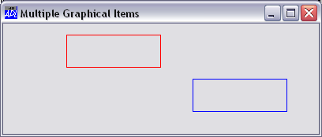
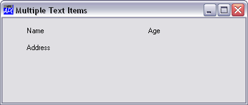

All graphical output objects (Circle, Ellipse, Image, Marker, Poly, Text and Rect) permit nested arguments so that you can draw several items with a single object. This feature has several advantages. Firstly, it allows you to treat related graphical items as a single object with a single name. This reduces the potential number of objects in existence and reduces the number of program statements needed to draw them. For example, sets of tick marks or grid lines do not have to be drawn separately, but can be represented by one object. Furthermore, because a set of lines can be embodied in a single object, you can erase them, replace them or drag/drop them as a unit. A further consideration is performance. A set of graphical items represented by a single object will normally be drawn faster than if each item was represented by separate objects.
For example, the following statements draw two separate rectangles; a red one at (y=10, x=20) and a blue one at (y=50, x=60). Both rectangles are size (30,30).
RED BLUE ← (255 0 0)(0 0 255)
'F.R1' ⎕WC 'Rect' (10 20)(30 30) ('FCol' RED)
'F.R2' ⎕WC 'Rect' (50 60)(30 30) ('FCol' BLUE)The next statement achieves the same result, but uses only one object:
'F.R' ⎕WC 'Rect' ((10 50)(20 60)) (30 30)
('FCol' RED BLUE)The rectangles drawn by both these sets of statements are shown below (blue and red have been replaced by black for clarity).

The capability to specify more than one graphical item as a single object is particularly useful with the Text object as it allows you to display or print several text items (at different positions and in different colours if you wish) in a single statement. For example, the following expressions display a set of "labels" in a Form 'F1':
LAB←'Name' 'Age' 'Address' POS←3 2⍴10 10 10 60 30 10 'F1.LABS' ⎕WC 'Text' LAB POS
